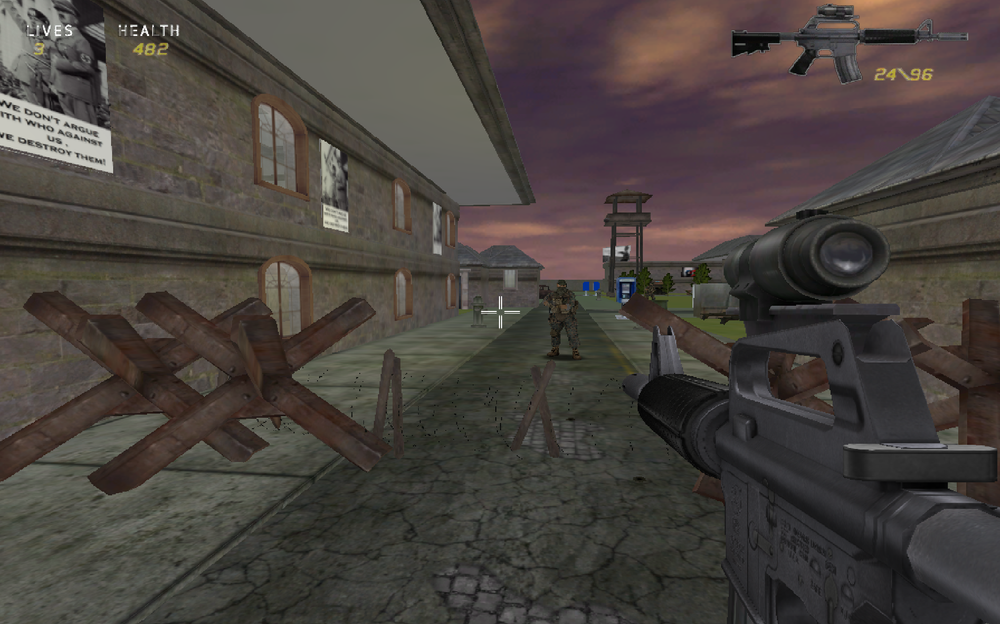
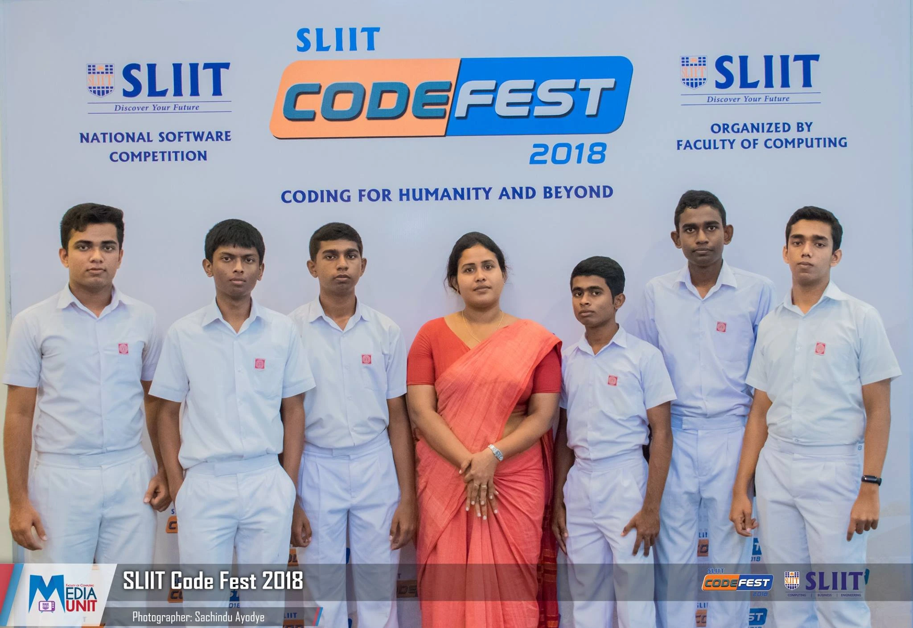

Game development
As a game development enthusiast, I have always been passionate about creating immersive gaming experiences that engage players on multiple levels. My journey began when I was in grade 12, and I developed my first game, "Service reporter's Invade"(You can download a demo copy of Service Reporter's Invade here ), for a competition using the game engine "FPS creator." The game was a shooter game with a unique storyline, where the player assumes the role of a soldier who has to fight off waves of enemies while saving the world from aliens.
After the success of my first game, I formed a team and started working on our next project, "Science Field", for the "Code Fest" coding competition at SLIIT. We created a puzzle game with a science-based theme, where players had to solve various problems related to different fields of science. Our efforts paid off, and we received a merit award for our game, which further fueled my passion for game development.

In the quest to develop more sophisticated games, I decided to learn the Unreal Engine, one of the most powerful game engines in the world. With Unreal Engine, I can create games with stunning graphics, physics, and artificial intelligence. My current project is a game called "RvsS", which is in development with my team. RvsS is a singleplayer game where player fight against aliens using various unique weapons and abilities. We are putting all our efforts into making it an exceptional gaming experience, and you can watch the footages of the game to see our progress.
Game development has been an exciting journey for me, and I enjoy every bit of it. It's a challenging yet fulfilling hobby that requires constant learning, creativity, and hard work. I'm always eager to learn new game development techniques, explore new game engines, and improve my skills to create better games that captivate and entertain players.
Here are play test footages of my game "Robots vs Solids"
Clip 1
Clip 2
Here are some game mechanics of my game "Robots vs Solids"
1. Weapon Wheel
2. Enemy NPC (AI)
3. Mini Zombies (AI)
4. Rocket Launcher
Here are some development footage of my educational game "Grammar Gauntlet" which is focusing on improving the english grammar skills of the player
Here are some footage of my first Mocap animation
Here are some footage of my first animation